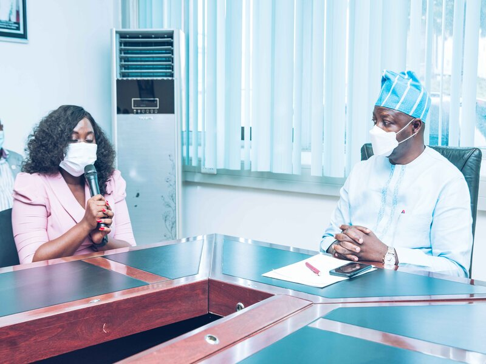
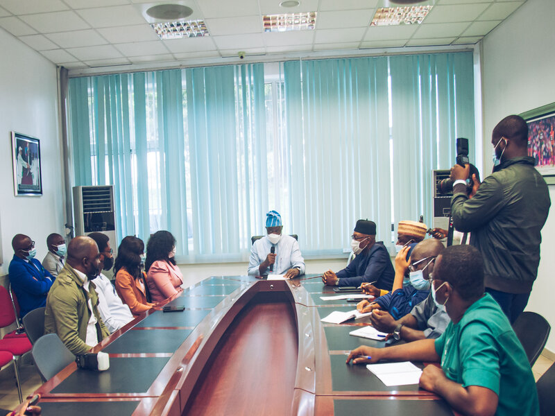
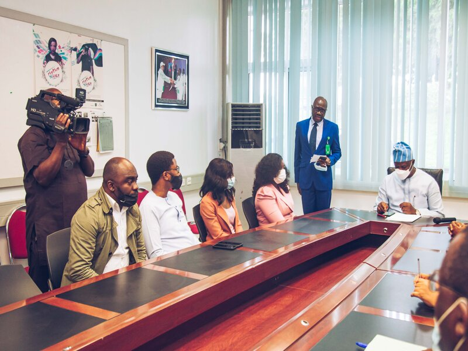
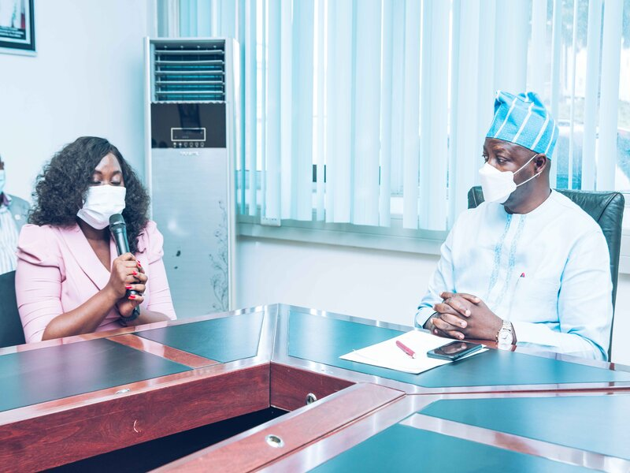
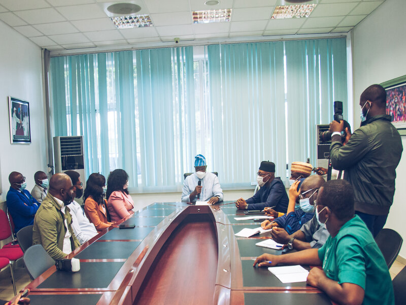
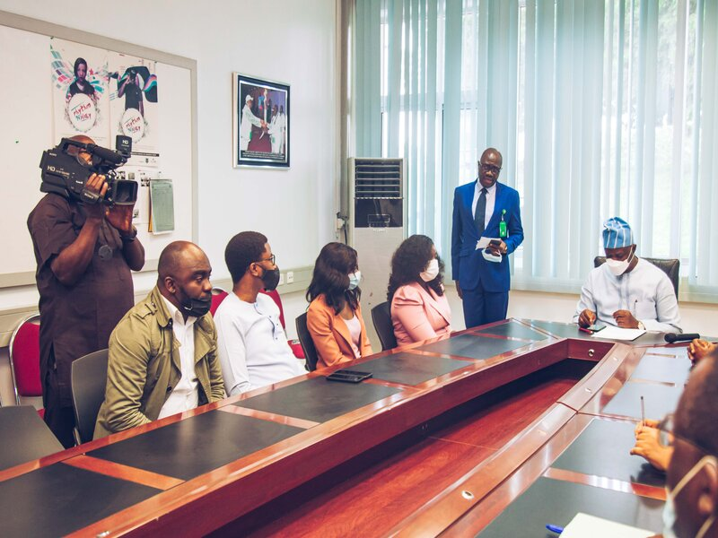

Goal
The Emerging Market model will train 36,000 youth over a 1-year period in through a blended learning approach: online and physical through skill training and youth centres across Nigeria.
EXPECTED OUTCOME
Build institutional capacity for Federal Ministries to deliver on skilling and employability services for youth
Train 36,000 youth in fundamental, intermediate and advanced level digital skills identified as skills needed in local and global workplaces in year 1
Empower 1800 trainers to deliver fundamental, intermediate and advanced level digital skills training
Empower 180 Master Trainers to deliver Train the Trainer sessions across 12 states in year 1(15 Master Trainers per state)
20% of the trained youth get access decent jobs e.g. full-time engagements, contract jobs, freelance jobs
20% of trained youth access experiential learning-based opportunities such as internships
The Emerging Market Model Initiative (EMMI) is a multi-year, multi-stakeholder private-public-non-profit partnership designed by Microsoft for the purpose of building the capacity of key government MDAs to offer sustainable, scalable reskilling and employment services aligned to the local labour markets. The initiative focuses on providing access to digital skills training (from digital literacy to advanced training) for young people in Nigeria between the ages of 16-35 years
In Nigeria, this project is implemented by Technology for Social Change and Development Initiative (Tech4Dev); a non-profit organization established to empower Af rican communities with digital skills that will bridge the gap of unskilled labour needed for the future of work.
The Emerging Market model will train 36,000 youth over a 1-year period in through a blended learning approach: online and physical through skill training and youth centres across Nigeria. This would be achieved through multi-year collaboration with four strategic Federal Government Ministries and 12 state governments namely:
Federal Ministries:
- Ministry of Youth and Sport Development
- Ministry of Communication and Digital Economy
- Ministry of Labor and Employment
- Ministry of Humanitarian Affairs
Pilot State Governments:
- Lagos
- Kwara
- Ogun
- Plateau
- Ondo
- FCT
- Delta
- Edo
- Kaduna
- Oyo
- Imo
- Nasarawa
OBJECTIVES
- Create sustainability for Digital capacity development and upskilling in Nigeria.
- Increase employability fit for digital opportunities across Nigeria
- Promote decent work for Nigerians by improving the ease of accessing opportunities through job matching efforts
FROM OUR GALLERY
 




